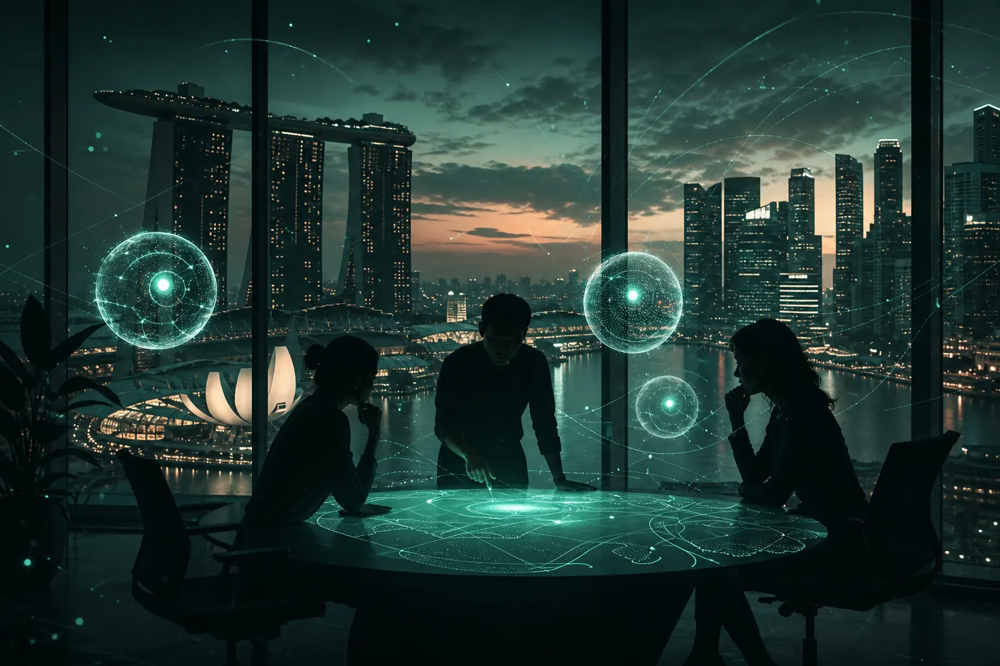

The 2027 marketing team: smaller, faster, or obsolete?

The 2027 marketing team will be smaller in headcount on execution, faster in its decision loop, and anything but obsolete. AI agents will absorb research, versioning and reporting. What remains, and grows in value, is judgment: choosing which audience signal matters, which idea deserves budget, and when to say no to the machine.
This is the question we are putting to a room of 20 marketing leaders on Monday 12 October 2026 at WeWork @ Battery Road, Singapore. The Marketing Mondays panel, co-hosted with Cape.io, brings together Aleks Farseev (Founder, SOMIN), Andy Gilroy (APAC lead, Cape.io) and Raj Parekh (VP, Head of Growth & Partnerships, Mediacorp). Before the room has its say, here is the signal as we read it, and the framework we will be testing against the panel.
Why is everyone asking whether the marketing team will shrink?
Because the visible work of marketing is the work AI does fastest. Briefs, first drafts, resizing, campaign reports, competitor scans: these used to fill calendars, and they used to justify headcount. When an agent can turn a brief into forty variations before lunch, it is reasonable for a CFO to ask why the team looks the same as it did in 2023.
The fear underneath the question is personal. In the conversations we listen to across the marketing community, the same tension keeps surfacing: perfectionism, the sense of being undervalued, and a quiet worry that AI will replace you before you have had a chance to prove you were worth keeping. That fear makes people defensive, and defensive teams redesign themselves badly. They either protect every role as it is or cut too deep and lose the people who knew why things worked.
What actually changes when agents join the team?
Three things move at once, and they move at different speeds.
- Production cost collapses. The marginal cost of another headline, cut-down or localised variant approaches zero. Volume stops being an advantage.
- The bottleneck shifts to evidence. If you can make anything, the hard question becomes what you should make. Teams that cannot read audience signal quickly will drown in options.
- Accountability concentrates. Fewer people sign off on more output. Each decision carries more weight, and each person needs more confidence in the evidence behind it.
Agencies are already reorganising around this. Our sister brand AgentC runs research, creative and optimisation through AI agents while human strategists keep ownership of judgment. That split, machines on throughput and humans on direction, is the shape we expect in-house teams to copy.
So is the answer smaller, faster, or obsolete?
Our position: smaller on execution, larger on sense-making, and faster in the loop between the two. Obsolete is the wrong word for the team; it is the right word for certain habits.
Habits we think will not survive 2027:
- Monthly reporting decks that describe what happened without saying what to do next.
- Briefs written from opinion rather than from what real audiences are saying.
- Creative approval by seniority instead of by evidence.
- Measuring the team by volume shipped.
Habits we think become essential:
- A weekly review of one real audience or competitor signal, with a named owner and a decision.
- Pre-testing ideas against audience response before money is committed.
- Clear human sign-off points where an agent's output is checked against the evidence behind it.
- Peer review outside the company, so the team is not marking its own homework.
What does a 2027 team chart look like?
Here is a working model we will put in front of the panel. It is a starting point for debate, not a prescription.
The signal desk
One or two people whose job is to read the market every week. They work with an audience-research platform such as SOMIN's strategy tooling to pull tensions, tones and competitor moves out of real posts, and they turn that into a short weekly brief. This is the role most teams lack today.
The orchestrators
Marketers who direct agents rather than produce assets themselves. They set the brief, review the output, and decide what ships. Their skill is taste plus process discipline.
The brand guardians
Senior people who protect the narrative and stop the team from chasing every trend. As production gets cheap, the cost of incoherence rises.
The commercial translator
Someone who ties marketing decisions to profit rather than platform metrics, and who can defend them to finance.
Checklist: is your team ready for 2027?
- Can you name the single most important audience signal your team acted on last week?
- Does every brief cite evidence from real audiences, not just internal opinion?
- Do you know which creative will work before you spend on media?
- Is there a defined human checkpoint for every agent workflow?
- Do your people have peers outside the company to test ideas with?
If you answered no to two or more, the risk is not that your team becomes obsolete. The risk is that it stays busy while a smaller, better-informed competitor makes the decisions that matter.
How are brands and agencies already doing this?
We will not quote numbers we cannot stand behind, but the patterns are visible in public work. The Havas Media case study shows how an agency used audience evidence to sharpen its planning, and SOMIN's page on AI for agencies describes the workflow shift in more detail. For in-house teams, the sibling question is how you measure what matters, which we unpack in our episode on vanity metrics.
Why we are asking this in a room, not just on YouTube
Marketing Mondays started as a weekly YouTube show built on one idea: one real signal, decoded and made actionable, every Monday. But a question this personal does not get answered by a video alone. It gets answered when twenty people who are each quietly worried about the same thing say it out loud, compare notes and leave with a plan. Confidence comes from collaboration and evidence, not from pretending you have already figured it out.
The 12 October session runs from 4 to 7 PM at MYP Centre #28-01, Battery Road. It is invite-only. If you lead a marketing team and want a seat, or want to be on the list for the next one, write to us at ask@mondays.marketing.
Know it before you show it. The 2027 team will not be the one with the most agents. It will be the one with the clearest signal.
Frequently asked questions
Will AI replace marketing teams by 2027?
No. AI will replace large parts of execution work, but decisions about audience, narrative and budget still need human judgment. Teams will likely shrink on production and grow on signal reading and orchestration.
When is the Marketing Mondays 2027 team panel?
Monday 12 October 2026, 4 to 7 PM, at WeWork @ Battery Road, MYP Centre #28-01, Singapore. It is an invite-only session for 20 marketing leaders, co-hosted with Cape.io.
What new role should a marketing team add first?
A signal desk: someone responsible for reading real audience and competitor signals every week and turning them into one clear decision for the team.
Request an invite
Marketing Mondays is a Singapore community of marketers, founders and agency teams, plus a weekly YouTube show. Real competitor and audience signals, not opinions, and a room of peers to test them with.
Email ask@mondays.marketing →